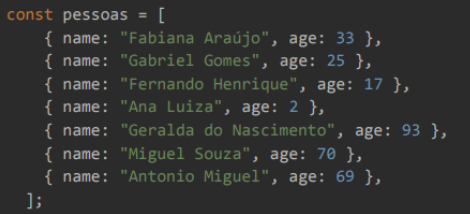
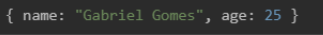
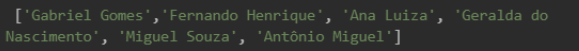
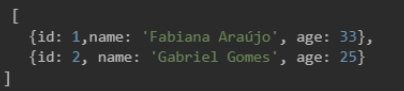

1) Você precisa criar um formulário para inserir/exibir os dados abaixo. Esse formulário deverá ser feito nas linguagens HTML/CSS ou React
Através das tags "<form></form>" e "<input></input>" eu capturaria as entradas de dados do usuário, com o JavaScript usaria listeners de eventos como o "submit" para enviar os dados de entrada para um banco de dados e com o CSS, usaria as propriedades e atributos como “margin” e “padding” para organizar os elementos e proporcionar uma interação agradável ao usuário.
2) Com os dados abaixo, precisamos que você os manipule com a linguagem de programação da sua preferência:
Se precisasse iterar o Array, usaria o método "foreach()". Para fazer uma cópia com a mesma quantidade de itens mas modificando os dados, usaria o método "map()". Se precisasse modificar o Array e alterar a quantidade de itens, usaria o método "filter()" e se precisasse usar o Array para criar um tipo de dado que não necessariamente é um Array, usaria o método "reduce()".
3) Agora que você manipulou os dados, precisamos que desenvolva uma função que retorna os dados de uma pessoa pelo nome passado via parâmetros.
Entrada = "Gabriel Gomes"
Retorno esperado:
4) E então, desenvolva uma função que retorna um vetor com os nomes das pessoas.
Retorno esperado:
5) Desenvolva uma função que insira um id único para cada pessoa no vetor.
Retorno esperado:
